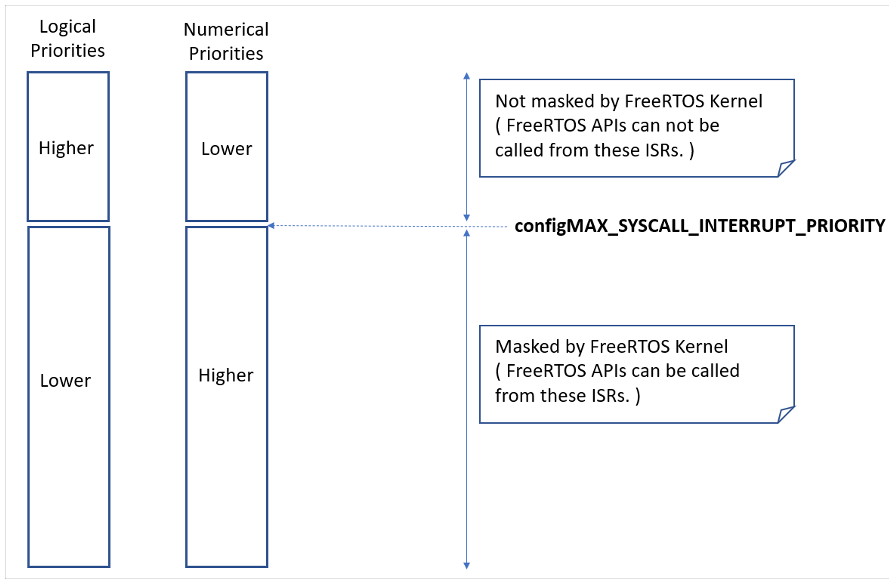

13 故障排查
13.1 章节简介与范围
本章重点介绍新用户在使用 FreeRTOS 时最常遇到的问题。首先关注三大常见问题：中断优先级分配错误、堆栈溢出和不当使用 printf()。随后以 FAQ 形式简要介绍其他常见错误、可能原因及解决方案。
使用
configASSERT()能显著提升开发效率，能立即捕获和定位许多常见错误。强烈建议在开发或调试 FreeRTOS 应用时定义configASSERT()。configASSERT()详见第 12.2 节。
13.2 中断优先级
注意：这是最常见的支持请求原因，在大多数端口中定义
configASSERT()可立即捕获此类错误！
如果所用 FreeRTOS 端口支持中断嵌套，且中断服务程序使用了 FreeRTOS API，则必须将该中断的优先级设置为不高于 configMAX_SYSCALL_INTERRUPT_PRIORITY（详见第 7.8 节“中断嵌套”）。否则会导致关键区无效，进而引发间歇性故障。
特别注意：
- 某些处理器（如部分 ARM Cortex）中断优先级默认最高，使用 FreeRTOS API 的中断不能保持未初始化状态。
- 数值高的优先级代表逻辑上的低优先级，这可能令人困惑（同样见于 ARM Cortex 等处理器）。
- 例如，在此类处理器上，优先级为 5 的中断可被优先级为 4 的中断打断。因此，如果
configMAX_SYSCALL_INTERRUPT_PRIORITY设为 5，任何使用 FreeRTOS API 的中断只能分配数值大于等于 5 的优先级。此时，优先级 5 或 6 有效，优先级 3 则无效。

-
不同的库实现对中断优先级的定义方式不同。特别是针对 ARM Cortex 处理器的库，中断优先级在写入硬件寄存器之前会被移位。一些库会自行执行移位操作，而另一些则期望在调用库函数之前完成移位。
-
相同架构的不同实现对中断优先级位数的支持不同。例如，来自不同厂商的 Cortex-M 处理器可能分别支持 3 位或 4 位优先级。
-
定义中断优先级的位可能分为抢占优先级位和子优先级位。确保所有位都分配给抢占优先级，以免使用子优先级。
在某些 FreeRTOS 端口中，configMAX_SYSCALL_INTERRUPT_PRIORITY 还有一个替代名称 configMAX_API_CALL_INTERRUPT_PRIORITY。
13.3 堆栈溢出
堆栈溢出是第二大常见支持请求来源。FreeRTOS 提供了几种功能来帮助捕获和调试与堆栈相关的问题[^28]。
[^28]: 这些功能在 FreeRTOS Windows 端口中不可用。
13.3.1 The uxTaskGetStackHighWaterMark() API Function
每个任务维护自己的堆栈，堆栈的总大小在任务创建时指定。uxTaskGetStackHighWaterMark() 用于查询任务溢出其分配的堆栈空间的程度。该值称为堆栈“高水位线”。
UBaseType_t uxTaskGetStackHighWaterMark( TaskHandle_t xTask );
Listing 13.1 The uxTaskGetStackHighWaterMark() API function prototype
uxTaskGetStackHighWaterMark() 参数和返回值
xTask
正在查询其堆栈高水位线的任务句柄（目标任务）—有关获取任务句柄的信息，请参见 xTaskCreate() API 函数的 pxCreatedTask 参数。
任务可以通过传递 NULL 代替有效任务句柄来查询其自身的堆栈高水位线。
- 返回值
随着任务的执行和中断的处理，任务使用的堆栈大小会不断增长和缩小。uxTaskGetStackHighWaterMark() 返回自任务开始执行以来，任务可用的最小剩余堆栈空间。这是在堆栈使用达到最大（或最深）值时剩余的未使用堆栈量。高水位线离零越近，任务溢出其堆栈的可能性就越大。
uxTaskGetStackHighWaterMark2() API 可以替代 uxTaskGetStackHighWaterMark() 使用，二者的唯一区别在于返回值类型。
configSTACK_DEPTH_TYPE uxTaskGetStackHighWaterMark2( TaskHandle_t xTask );
Listing 13.2 The uxTaskGetStackHighWaterMark2() API function prototype
使用 configSTACK_DEPTH_TYPE 允许应用程序员控制用于堆栈深度的类型。
13.3.2 运行时堆栈检查 - 概述
FreeRTOS 包含三种可选的运行时堆栈检查机制。这些机制由 FreeRTOSConfig.h 中的 configCHECK_FOR_STACK_OVERFLOW 编译时配置常量控制。这两种方法都会增加上下文切换的时间。
堆栈溢出钩子（或堆栈溢出回调）是内核在检测到堆栈溢出时调用的函数。要使用堆栈溢出钩子函数：
-
在 FreeRTOSConfig.h 中将
configCHECK_FOR_STACK_OVERFLOW设置为 1、2 或 3，如以下子节所述。 -
提供钩子函数的实现，使用与列表 13.3 中所示完全相同的函数名称和原型。
void vApplicationStackOverflowHook( TaskHandle_t *pxTask, signed char *pcTaskName );
Listing 13.3 The stack overflow hook function prototype
堆栈溢出钩子旨在简化堆栈错误的捕获和调试，但发生溢出时实际上无法从中恢复。该函数的参数将溢出堆栈的任务的句柄和名称传递给钩子函数。
堆栈溢出钩子从中断上下文中调用。
某些微控制器在检测到不正确的内存访问时会生成故障异常，因此在内核有机会调用堆栈溢出钩子函数之前，可能会触发故障。
13.3.3 运行时堆栈检查 - 方法 1
当 configCHECK_FOR_STACK_OVERFLOW 设置为 1 时，选择方法 1。
每次任务被调出时，任务的整个执行上下文都会保存到其堆栈中。这可能是堆栈使用达到峰值的时刻。当 configCHECK_FOR_STACK_OVERFLOW 设置为 1 时，内核会检查上下文保存后堆栈指针是否仍在有效堆栈空间内。如果发现堆栈指针超出有效范围，则会调用堆栈溢出钩子。
方法 1 执行迅速，但可能会错过上下文切换之间发生的堆栈溢出。
13.3.4 运行时堆栈检查 - 方法 2
方法 2 在方法 1 描述的检查基础上执行了额外的检查。当 configCHECK_FOR_STACK_OVERFLOW 设置为 2 时选择此方法。
当创建任务时，会用已知模式填充其堆栈。方法 2 测试任务堆栈空间最后 20 个字节的值，以验证该模式是否未被覆盖。如果这 20 个字节中的任何一个字节发生了变化，则会调用堆栈溢出钩子函数。
方法 2 的执行速度不及方法 1 快，但仍然相对较快，因为只测试了 20 个字节。它最有可能捕获所有堆栈溢出；然而，某些溢出可能会被漏掉（但极不可能）。
13.3.4 运行时堆栈检查 - 方法 3
当 configCHECK_FOR_STACK_OVERFLOW 设置为 3 时，选择方法 3。
此方法仅在某些选定的端口可用。当可用时，此方法启用 ISR 堆栈检查。当检测到 ISR 堆栈溢出时，会触发断言。在这种情况下，不会调用堆栈溢出钩子函数，因为它特定于任务堆栈而不是 ISR 堆栈。
13.4 对 printf() 和 sprintf() 的使用
通过 printf() 进行日志记录是一个常见错误，开发人员常常在不知情的情况下添加更多 printf() 调用来辅助调试，从而加剧了这个问题。
许多交叉编译器供应商会提供适合嵌入式系统使用的 printf() 实现。即使有这样的实现，它也可能不是线程安全的，可能不适合在中断服务例程中使用，并且根据输出的目标，执行时间可能相对较长。
特别注意，如果没有可用于小型嵌入式系统的 printf() 实现，而是使用了通用的 printf() 实现：
-
仅仅包含对
printf()或sprintf()的调用就可能大幅增加应用程序可执行文件的大小。 -
printf()和sprintf()可能会调用malloc()，如果使用的内存分配方案不是 heap_3，则可能无效。有关更多信息，请参见第 3.2 节“示例内存分配方案”。 -
printf()和sprintf()可能需要的堆栈大小是其他情况下所需堆栈大小的几倍。
13.4.1 Printf-stdarg.c
许多 FreeRTOS 演示项目使用一个名为 printf-stdarg.c 的文件，它提供了一个最小和堆栈高效的 sprintf() 实现，可以替代标准库版本。在大多数情况下，这将允许为每个调用 sprintf() 和相关函数的任务分配更小的堆栈。
printf-stdarg.c 还提供了一种机制，可以将 printf() 输出逐字符定向到一个端口，尽管速度较慢，但可以进一步减少堆栈使用。
请注意，并非所有 FreeRTOS 下载中包含的 printf-stdarg.c 都实现了 snprintf()。不实现 snprintf() 的副本会直接忽略缓冲区大小参数，因为它们直接映射到 sprintf()。
printf-stdarg.c 是开源的，但归第三方所有，因此与 FreeRTOS 另行授权。许可证条款包含在源文件的顶部。
13.5 其他常见错误来源
13.5.1 症状：向演示添加简单任务导致演示崩溃
创建任务需要从堆中获取内存。许多演示应用程序项目将堆的大小设置为刚好足够创建演示任务的大小，因此在创建任务后，剩余的堆内存不足以添加其他任务、队列、事件组或信号量。
空闲任务，可能还有 RTOS 守护任务，在调用 vTaskStartScheduler() 时会自动创建。
如果没有足够的堆内存剩余以创建这些任务，则 vTaskStartScheduler() 将返回。包括空循环 [ for(;;); ]
在对 vTaskStartScheduler() 的调用之后，可以更容易地调试此错误。
要添加更多任务，必须增加堆大小或删除一些现有的演示任务。堆大小的增加将始终受到可用 RAM 数量的限制。有关更多信息，请参见第 3.2 节“示例内存分配方案”。
13.5.2 症状：在中断中使用 API 函数导致应用崩溃
不要在中断服务例程中使用 API 函数，除非 API 函数的名称以 '...FromISR()' 结尾。特别是，不要在中断中创建临界区，除非使用中断安全宏。有关更多信息，请参见第 7.2 节“从 ISR 使用 FreeRTOS API”。
在支持中断嵌套的 FreeRTOS 端口中，不要在分配给中断的优先级高于 configMAX_SYSCALL_INTERRUPT_PRIORITY 的中断中使用任何 API 函数。有关更多信息，请参见第 7.8 节“中断嵌套”。
13.5.3 症状：有时应用在中断服务例程中崩溃
首先检查中断是否导致堆栈溢出。某些端口仅在任务内检查堆栈溢出，而不检查中断。
中断的定义和使用方式因端口和编译器而异。因此，第二步是检查中断服务例程中使用的语法、宏和调用约定是否与所用端口提供的文档页面中描述的完全相同，并与端口提供的演示应用程序中演示的完全相同。
如果应用程序运行在一个使用数值低的优先级表示逻辑上高优先级的处理器上，则确保分配给每个中断的优先级考虑到了这一点，因为这可能看起来违反直觉。如果应用程序运行在一个将每个中断的优先级默认设置为最高值的处理器上，则确保每个中断的优先级不是保持在默认值。有关更多信息，请参见第 7.8 节“中断嵌套”和第 13.2 节“中断优先级”。
13.5.4 症状：调度器尝试启动第一个任务时崩溃
确保 FreeRTOS 中断处理程序已安装。有关信息，请参考所用 FreeRTOS 端口的文档页面，以及为该端口提供的演示应用程序中的示例。
某些处理器必须处于特权模式，才能启动调度程序。最简单的方法是在 C 启动代码中将处理器置于特权模式，在调用 main() 之前。
13.5.5 症状：中断意外地保持禁用，或临界区未正确嵌套
如果在调度程序启动之前调用了 FreeRTOS API 函数，则中断将故意保持禁用状态，并在第一个任务开始执行之前不会重新启用。这是为了保护系统免受中断的影响，这些中断试图在系统初始化期间使用 FreeRTOS API 函数，在此期间，调度程序尚未启动，且调度程序可能处于不一致状态。
不要使用除 taskENTER_CRITICAL() 和 taskEXIT_CRITICAL() 之外的任何方法更改微控制器中断使能位或优先级标志。这些宏会跟踪其调用嵌套深度，以确保中断仅在调用嵌套完全展开到零时才会重新启用。请注意，某些库函数可能会自行启用和禁用中断。
13.5.6 症状：应用程序在调度程序启动之前崩溃
在调度程序启动之前，可能导致上下文切换的中断服务例程不得执行。任何尝试发送或接收 FreeRTOS 对象（如队列或信号量）的中断服务例程也是如此。在调用 vTaskStartScheduler() 之后，才能发生上下文切换。
许多 API 函数在调度程序启动之前无法调用。最好将 API 用于创建对象（如任务、队列和信号量），而不是在调用 vTaskStartScheduler() 之后使用这些对象。
13.5.7 症状：在调度程序挂起或临界区内调用 API 函数导致应用崩溃
通过调用 vTaskSuspendAll() 挂起调度程序，通过调用 xTaskResumeAll() 恢复（取消挂起）调度程序。通过调用 taskENTER_CRITICAL() 进入临界区，通过调用 taskEXIT_CRITICAL() 退出临界区。
不要在调度程序挂起时或在临界区内调用 API 函数。
## 13.6 其他调试步骤
如果您遇到的 문제未包含在上述常见原因中，可以尝试以下调试步骤。
- 定义
configASSERT()，启用 malloc 失败检查和堆栈溢出检查。 - 检查 FreeRTOS API 的返回值以确保其成功。
- 检查与调度相关的配置，如
configUSE_TIME_SLICING和configUSE_PREEMPTION，确保其根据应用程序需求正确设置。 - 此页面 提供了有关在 Cortex-M 微控制器上调试硬故障的详细信息。